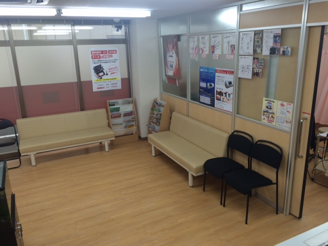
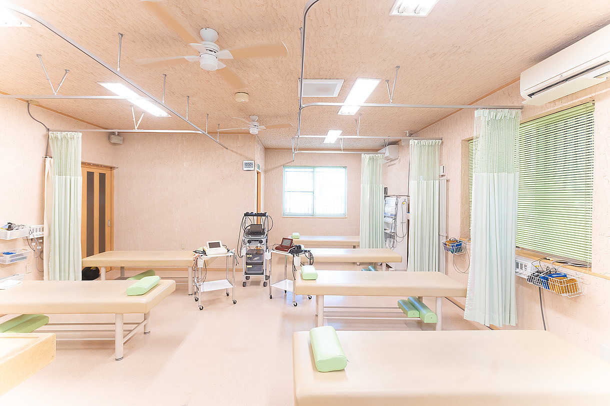
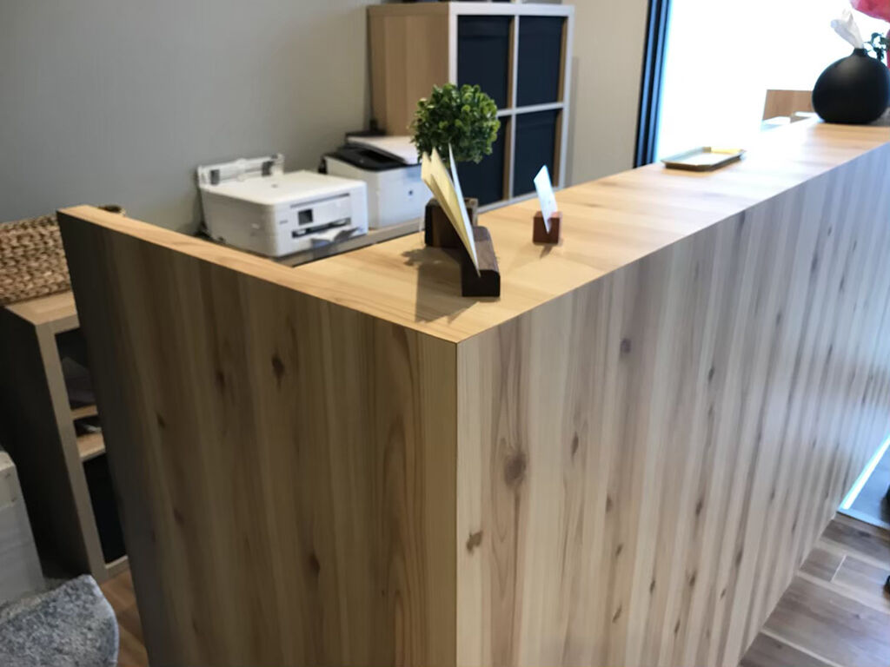
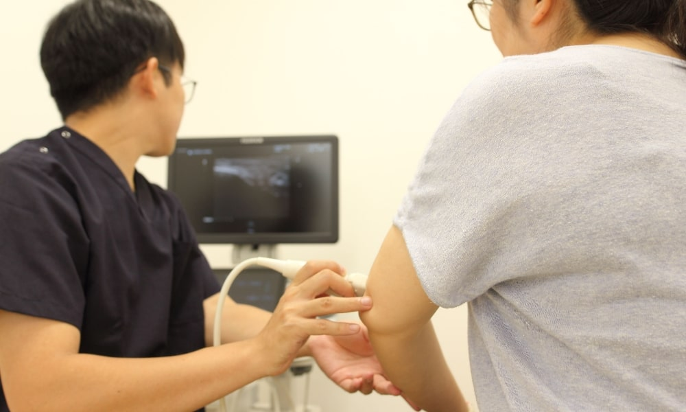

「がっつり向き合う施術」で、
あなたの痛みを根本から改善。
上田井接骨院は、徳島市西エリアで17年にわたり、地域の皆さまの痛みやお悩みに向き合ってまいりました。 交通事故治療を中心に、腰痛・ぎっくり腰など急性の痛みにも積極的に取り組んでいます。 「一度で違いがわかる」「先生の腕がとても良い」とお声をいただけるよう、 結果重視の丁寧な施術を心がけています。 理学療法士・柔道整復師のダブルライセンスで、専門性の高いケアをご提供します。

上田井接骨院 6つの特徴 FEATURES
丁寧な初回カウンセリング
初回は30分以上のお時間をいただき、症状の経過・生活習慣・お悩みまで、しっかりと伺います。お話の中から本当の原因を見つけます。
姿勢・骨格分析による検査
姿勢撮影や可動域チェックなどの検査を行い、視覚的に体の状態をご説明します。納得いただいた上で施術を進めます。
国家資格者による施術
柔道整復師の国家資格を持つスタッフが、丁寧に施術を行います。スポーツ・産後・交通事故など、専門領域にも対応します。
オーダーメイドの施術プラン
同じ症状でも、原因や体質は人それぞれ。お一人おひとりに合わせた施術プランをご提案し、目標までしっかり伴走します。
再発予防のセルフケア指導
施術だけで終わらず、ご自宅でできるストレッチやエクササイズもお伝えします。再発しにくい体づくりまでをサポートします。
通いやすい立地と営業時間
阿波富田駅徒歩圏内、平日夜19:30まで営業。土曜午前も9:15〜12:00まで診療。無料駐車場も完備しており、通いやすい環境を整えています。
私たちの治療方針 POLICY
「聴く・見極める・寄り添う」3つのステップで、根本からのケアをご提供します。
聴く
お悩みや背景にある生活習慣まで、じっくり伺います。話すこと自体が、回復への第一歩です。
見極める
姿勢分析や可動域検査で、痛みの本当の原因を見極め、わかりやすくご説明します。
寄り添う
施術もセルフケアも、目標達成まで一緒に。痛みのない毎日を取り戻すまで伴走します。
院内のご紹介 CLINIC
落ち着いた木の温もりとやわらかな自然光。リラックスして過ごせる空間づくりを心がけています。

待合スペース
施術ベッド
受付
姿勢検査エリア.jpeg) キッズスペース
キッズスペース